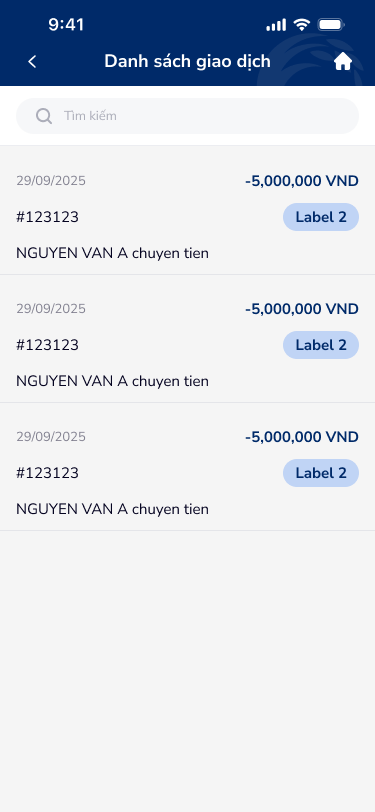
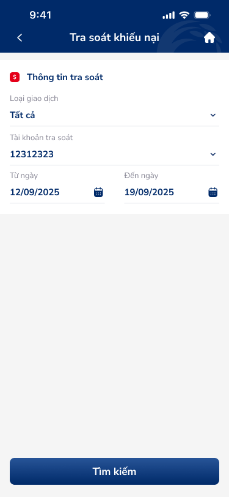
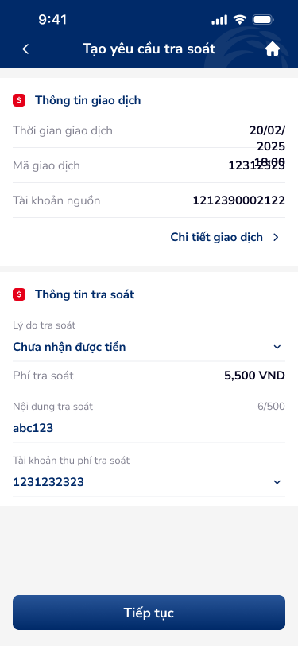

🔎 03 · Các vấn đề được phát hiện
🔴 Nghiêm trọng — Cần xử lý ngay
UXP-001
Thông tin nhạy cảm trong danh sách giao dịch (số tài khoản) không được masked
Critical
| Hiện trạng | Số tài khoản trong danh sách giao dịch không được masked — PII exposed on giao dịch list for dispute filing. |
| Tác động | Account numbers visible in dispute context = double exposure risk. người dùng showing screen to support staff → all account data visible to bystanders. |
| Nguyên tắc vi phạm |
|
| Đề xuất |
|
UXP-002
OTP Modal thiếu countdown timer và nút "Gửi lại OTP" — vi phạm DDL...
Critical| Hiện trạng | OTP Modal thiếu countdown timer và 'Gửi lại OTP' — vi phạm DDL otp-input-1 spec. OTP cells dạng dash, active state unclear. |
| Tác động | Systemic OTP gap. Dispute OTP = critical — failed OTP → người dùng không thể file complaint → financial loss continues. |
| Nguyên tắc vi phạm |
|
| Đề xuất |
|
🟡 Quan trọng — Ưu tiên cao
UXP-003
Empty state thiếu illustration — chỉ có text "Không có kết quả tìm...", thiếu...
Major| Hiện trạng | trạng thái trống (mobile-10): chỉ text 'Không có kết quả tìm kiếm' — thiếu illustration, thiếu CTA 'Xóa tìm kiếm'. |
| Tác động | Text-only trạng thái trống = uninviting. No CTA to reset search → người dùng phải manually clear filter. |
| Nguyên tắc vi phạm |
|
| Đề xuất |
|
UXP-004
Màn hình chi tiết giao dịch thiếu CTA để tiếp tục — vi phạm Peak-End Rule và...
Major
| Hiện trạng | Chi tiết giao dịch thiếu CTA để tiếp tục — người dùng views giao dịch detail but can't take action (file dispute from here). |
| Tác động | Dead-end screen. người dùng sees problematic giao dịch → no 'Tạo yêu cầu tra soát' CTA → must navigate back, find the feature separately. |
| Nguyên tắc vi phạm |
|
| Đề xuất |
|
UXP-005
Các trường bắt buộc (Lý do tra soát, Tài khoản thu phí) không có indicator (*)...
Major
| Hiện trạng | bắt buộc fields (Lý do tra soát, TK thu phí) thiếu indicator (*) và validation. người dùng doesn't know which fields are bắt buộc. |
| Tác động | Submit with thiếu bắt buộc fields → error → form reset potentially. bắt buộc indicator prevents. |
| Nguyên tắc vi phạm |
|
| Đề xuất |
|
UXP-006
CTA "Tiếp tục" không có trạng thái disabled khi form chưa hợp lệ — vi phạm...
Major
| Hiện trạng | CTA 'Tiếp tục' không disable khi form trống — người dùng can tap submit on empty form. |
| Tác động | Tap submit on empty → error popup → frustration. Button should be disabled until bắt buộc fields filled. |
| Nguyên tắc vi phạm |
|
| Đề xuất |
|
UXP-007
Success icon dùng màu brand blue thay vì green — gây nhầm lẫn semantic color...
Major| Hiện trạng | Success checkmark icon uses brand blue instead of green — semantic color mismatch. Blue = info/neutral, green = success. |
| Tác động | Blue checkmark ≠ clear success signal. người dùng accustomed to green = success from all other apps. Brand color overriding UX convention. |
| Nguyên tắc vi phạm |
|
| Đề xuất |
|
⚪ Cải thiện — Nâng cao trải nghiệm
UXP-008
Tab active state cần contrast cao hơn giữa active/inactive
Minor| Hiện trạng | Tab active state: blue underline but font weight giống nhau as inactive. Low contrast differentiation. |
| Tác động | Subtle active indicator → người dùng may not register which tab is selected, especially in bright light. |
| Nguyên tắc vi phạm |
|
| Đề xuất |
|
UXP-009
Tight spacing giữa thời gian giao dịch (18:00) và giá trị ngày (20/02/2025) —...
Minor| Hiện trạng | Tight spacing giữa time '18:00' và date '20/02/2025' — text feels cramped, hard to distinguish. |
| Tác động | Compressed metadata = scan difficulty. '20/02/2025 18:00' needs clear separator or layout. |
| Nguyên tắc vi phạm |
|
| Đề xuất |
|
UXP-010
OTP input cells có border/dash mỏng và nhạt, khó thấy vị trí nhập
Minor| Hiện trạng | OTP cells dash style, border mỏng nhạt — khó thấy vị trí nhập. Active cell not distinguished. |
| Tác động | Faint OTP input cells → người dùng không thể see where to type. Especially problematic for older người dùng. |
| Nguyên tắc vi phạm |
|
| Đề xuất |
|